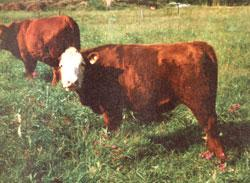

This easy-to-raise hybrid can put fine meat on your table, and money in your pocket as well!
Three years ago, my husband David and I added the bloodlines of the American bison to our homestead cattle. The result was beefalo ... and our relationship with this relatively new breed of livestock-which is 3/8 bison and 5/8 domestic cow-has convinced us that it's ideally suited to the small family farm. Beefalo are hardy, fertile, and docile ... and these bovine-bisons will efficiently convert whatever food is readily available to meat-on-the-hoof.
WEATHERPROOF CATTLE
The blizzards of '76 and '77-the worst ever recorded in Kentucky -turned out to be an ideal test of our crossbreeds' ability to withstand severe weather. While farmers all around us lost cattle daily to the cold, our beefalo not only survived ... but actually thrived! No doubt their "buffalo robes"-thick coats of hair inherited (along with rugged constitutions) from their free-roaming ancestors-helped our cattle weather subzero wind-chill factors.
During the prolonged, extreme cold the beasts fed heavily on hay (homegrown clover, alfalfa, and fescue mixed), but they didn't eat much expensive grain ... and their body weights still remained stable. The crossbreeds also drank Mod water Kom a hole cut in the 18-inch layer of ice on our farm pond, and even that frozen slush produced no ill effects (except on those of us who had to chop through to the water).
EASY TO BREED
Because beefalo are the offspring of two animals of different species, their ability to reproduce has been questioned. But one of the reasons that breeders have settled upon the ratio of 3/8 bison to 5/8 cow is that such animals demonstrate a high degree of fertility. As long as the proportion of bison is kept at or below the 3/8 level, there are few-if any-reproductive problems.
In fact, we've found that our heifers actually begin their cycles earlier than do regular domestic cattle. However, to insure maximum physical development prior to the arrival of the calf (nine months and ten days after conception), it's preferable to wait until a female is at least 13 months old before breeding her.
Beefalo bulls are good breeders, too, and have an unusually rapid growth rate. Our stud (Goldenrod) was the first example of this cross to be calved in Kentucky. Tests performed on his semen indicate a constant live sperm count of 32,000,000 per unit ... which, of course, results in a good conception rate among females bred by him. This same bull has amazed us with his speedy development: At birth he weighed 78 pounds ... at one year, 1,065 ... and now (at 24 months of age) "Goldie" tips the scale at a robust 2,000 pounds and is still growing! Any way you look at it, that's a lot of bull!
A CINCH TO RAISE
In addition to high fertility rates, our beefalo cows have had no calving difficulties. Before we switched to this breed, it was necessary that either David or I be on hand to assist with most of our calf deliveries, but now our cows give birth naturally in the pasture with little human supervision. Better yet, even young animals-when calving for the first time-exhibit strong maternal instincts.
We've also found that the "baby" beefalo are up and nursing within an hour after birth, and we've never had a case of infant illness of any kind. The young ones are active and show remarkable stamina, too. One calf born in December, 1977 (during a snowstorm) never saw grass until late March, 1978 ... because of the constant snow cover. Noel (as he was later dubbed) thrived on just mother's milk and hay.
In addition, we've found that our new breed of calves start eating solids early. It's not unusual to see one-week-old babies sneaking food from the manger, and all these rugged grandchildren of the bison gain weight rapidly with little or no grain to supplement their hay and forage diets.
You can be sure that not having to worry over sick calves-or provide special feed-has lightened our homestead chores considerably.
POPULAR GENTLE GIANTS
Of equal importance is the temperament of these beautiful animals. Beefalo are a pleasure to handle, and exhibit none of the aggressive traits of their untamed ancestors. We can move among our herd with only the normal precautions that should be taken when working around any large animals.
Since we only have enough land (17 acres) for a small herd, we find that raising beefalo has another distinct advantage: The national population of this hybrid is very low. This fact enables us to get a premium price for any animals we wish to sell. At the present time, we have a waiting list of people who want to acquire beefalo meat, and we need only call when we have a steer of marketable size.
Thus, not only do beefalo enable us to run a small herd with a minimum of work, worry, and frustration ... but they also provide us with an easy-to-sell product. Consequently-at this farmstead-we have good reason to sing: "Oh, give me a home where the beefalo roam. "
EDITOR'S NOTE: More information on beefalo can be obtained by writing the American Beefalo Association, Inc., 200 Semonin Building, 4812 U.S. Highway 42, Louisville , Kentucky . Please include a self-addressed, stamped envelope with any questions sent to this organization.
|
|
 |
|